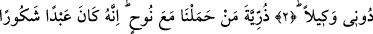
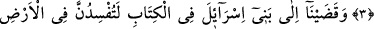
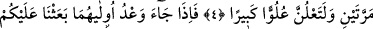
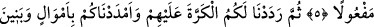
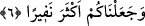
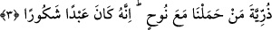

BENDEN BAŞKASINI
RAB EDİNMEYİN
2. Biz, Mûsâ’ya Kitab’ı verdik ve onu İsrâiloğulları’na: “Benden başkasını
dayanılıp güvenilen bir rab edinmeyin.” diye bir hidâyet rehberi kıldık.
3. (Ey) Nuh ile birlikte (gemide) taşıdığımız kimselerin nesli! Doğrusu o, çok
şükreden bir kuldu.
4. Biz, Kitap’ta İsrailoğulları’na: Sizler, yeryüzünde iki defa fesad çıkaracaksınız
ve azgınlık derecesinde bir kibre kapılacaksınız, diye bildirdik.
5. Bunlardan ilkinin zamanı gelince, üzerinize güçlü kuvvetli kullarımızı
gönderdik. Bunlar, evlerin arasında dolaşarak (sizi) aradılar. Bu, yerine getirilmiş
bir vaad idi.
6. Sonra onlara karşı size tekrar (galibiyet ve zafer) verdik; servet ve oğullarla
gücünüzü arttırdık; sayınızı daha da çoğalttık.
“Biz, Mûsa’ya Kitab’ı verdik” yâni, Mûsâ’yı geceleyin Tûr’a çıkardıktan sonra
Tevrât’ı bir defada ona indirdik. “ve onu” yâni, Tevrât’ı içindeki ahkâm ve ilâhî
emîrlerle amel ederek hakkı ve doğruyu bulmaları için “İsrâiloğulları’na” yâni Yakub
(a.s.)’ın nesline: “Benden başkasını dayanılıp güvenilen bir rab edinmeyin.” mühim
işlerinizi Rabbinize bırakın “diye bir hidâyet rehberi kıldık.”
3. (Ey) Nuh ile birlikte (gemide) taşıdığımız kimselerin nesli! Doğrusu o, çok